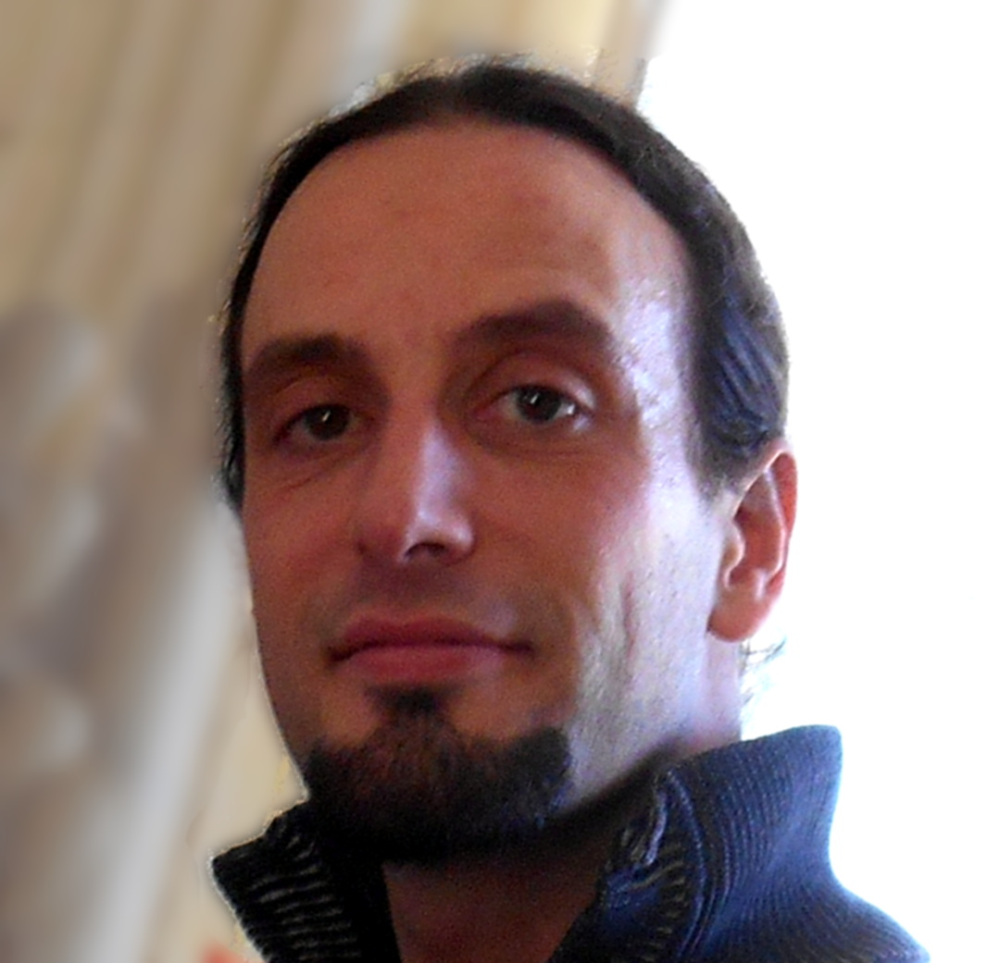

Anthony Scemama
Ingénieur de Recherche CNRS
Laboratoire de Chimie et Physique Quantiques
IRSAMC, Université Paul Sabatier Toulouse III
118, route de Narbonne
31062 Toulouse Cedex 4
ORCID : 0000-0003-4955-7136
Go to Top
Main Software
- Quantum Package
- A programming environment for wave function methods.
- QMC=Chem
- Massively parallel general Quantum Monte Carlo code
- IRPF90
- Fortran pre-processor helping the development of large scientific codes in Fortran
- EZFIO
- The Easy Fortran I/O library generator
- F77_ZMQ
- A Fortran77 binding for the ZeroMQ communication library.
Go to Top
Oral presentations
10/10/2019 Journées des Calculs et de données, Toulouse.
Watch video
03/09/2019 Computation and understanding in molecular science, Toulouse.
12/06/2019 Rencontres Prospectives RFCT 2019 : "Modélisations multi-échelle", Nantes
25/04/2019 CECAM Workshop Microscopic simulations: forecasting the next two decades, Toulouse
07/02/2019 Virtual Winter School on Computational Chemistry
11/10/2018 RCTF, Toulouse
21/09/2017 CALMIP, Toulouse
19/07/2017 TSRC, Telluride, USA
13/07/2017 ALCF, Argonne, USA
22/05/2017 CECAM Theoretical Chemistry for Extended Systems, Toulouse
-
18/12/2015 Pacifichem QMC symposium, Honolulu
6/11/2015 Réunion TouCAM, Toulouse
-
8/10/2015 Centre for Theoretical and Computational Chemistry, Oslo
7/10/2015 Centre for Theoretical and Computational Chemistry, Oslo
8/7/2015 Reunion du GDR Correl, Marseille
-
-
13/3/2015 discussion meeting CECAM-Fr-IdF "Développement de codes de chimie théorique dans un environnement HPC", Orsay
3/2/2015 HPC Knowledge Portal meeting, Barcelona
Watch video
-
30/9/2014 Maison de la simulation de l'Université de Reims Champagne-Ardenne
23/1/2014 CECAM Workshop on two-dimensional inorganic materials, EPFL, Lausanne (Switzerland)
20/9/2013 Journée Mésochallenges
Equip@Meso, IHP, Paris
25/6/2013 CECAM deMon Workshop, LCC, Toulouse
4/12/2012 Maison de la simulation, Saclay
-
18/07/2012 10th International Meeting on High-Performance Computing for Computational Science (VECPAR 2012), Kobe (Japan)
28/06/2012 Forum Teratec, Ecole Polytechnique, Palaisau
19/06/2012 International Supercomputing Conference, Intel Theater, Hamburg (Germany)
15/06/2012 Laboratoire de Chimie de Coordination, Toulouse
26/4/2012 Réunion Capitoul, Toulouse
17/11/2011 1000 x 0 = 0. Single-node optimisation does matter, Supercomputing conference 2011, Seattle (USA)
27/04/2011 CEA, Bruyères-le-Chatel
-
26/06/2010 20 Years ELF, Paris
14/05/2010 INGRID 2010, Poznan (Poland)
16/12/2009 IRSAMC, Toulouse
13/11/2008 IRSAMC, Toulouse
-
20/11/2008 IRSAMC, Toulouse
30/06/2008 ICCSA, Perugia (Italy)
-
09/02/2006 INRIA, Rocquencourt
15/04/2005 IRSAMC, Toulouse
Go to Top
Publication list
A basis-set error correction based on density-functional theory for strongly correlated molecular systems
Emmanuel Giner,
Anthony Scemama,
Pierre-François Loos,
Julien Toulouse
PDF , ArXiv:
2001.11832
A Mountaineering Strategy to Excited States: Highly-Accurate Energies and Benchmarks for Medium Size Molecules
Pierre-François Loos,
Filippo Lipparini,
Martial Boggio-Pasqua,
Anthony Scemama,
Denis Jacquemin
PDF , ArXiv:
1912.04173, DOI:
10.1021/acs.jctc.9b01216
Quantum Package 2.0: An Open-Source Determinant-Driven Suite of Programs
Yann Garniron,
Thomas Applencourt,
Kevin Gasperich,
Anouar Benali,
Anthony Ferté,
Julien Paquier,
Barthélémy Pradines,
Roland Assaraf,
Peter Reinhardt,
Julien Toulouse,
Pierrette Barbaresco,
Nicolas Renon,
Grégoire David,
Jean-Paul Malrieu,
Mickaël Veril,
Michel Caffarel,
Pierre-Francois Loos,
Emmanuel Giner,
Anthony Scemama
PDF , ArXiv:
1902.08154, DOI:
10.1021/acs.jctc.9b00176
Reference Energies for Double Excitations
Pierre-François Loos,
Martial Boggio-Pasqua,
Anthony Scemama,
Michel Caffarel,
Denis Jacquemin
PDF , ArXiv:
1811.12861, DOI:
10.1021/acs.jctc.8b01205
Self-Consistent Electron-Nucleus Cusp Correction for Molecular Orbitals
Pierre-Francois Loos,
Anthony Scemama,
Michel Caffarel
ArXiv:
1902.03406, DOI:
10.1016/bs.aiq.2019.03.003
A Density-Based Basis-Set Incompleteness Correction for GW Methods
Pierre-François Loos,
Barthélémy Pradines,
Anthony Scemama,
Emmanuel Giner,
Julien Toulouse
ArXiv:
1910.12238, DOI:
10.12238
A Density-Based Basis-Set Correction for Wave Function Theory
Pierre-François Loos,
Barthélémy Pradines,
Anthony Scemama,
Julien Toulouse,
Emmanuel Giner
DOI:
10.1021/acs.jpclett.9b01176
Chemically Accurate Excitation Energies With Small Basis Sets
Emmanuel Giner,
Anthony Scemama,
Julien Toulouse,
Pierre-Francois Loos
PDF , ArXiv:
1907.01245, DOI:
10.1063/1.5122976
Excited States with Selected Configuration Interaction-Quantum Monte Carlo: Chemically Accurate Excitation Energies and Geometries
Monika Dash,
Jonas Feldt,
Saverio Moroni,
Anthony Scemama,
Claudia Filippi
PDF , ArXiv:
1905.06737, DOI:
10.1021/acs.jctc.9b00476
Influence of Pseudopotentials on Excitation Energies From Selected Configuration Interaction and Diffusion Monte Carlo
Anthony Scemama,
Michel Caffarel,
Anouar Benali,
Denis Jacquemin,
Pierre-Francois Loos
PDF , ArXiv:
1904.00678, DOI:
10.1016/j.rechem.2019.100002
Selected configuration interaction dressed by perturbation
Yann Garniron,
Anthony Scemama,
Emmanuel Giner,
Michel Caffarel,
Pierre-François Loos
PDF , ArXiv:
1806.04970, DOI:
10.1063/1.5044503
Excitation energies from diffusion Monte Carlo using selected configuration interaction nodes
Anthony Scemama,
Anouar Benali,
Denis Jacquemin,
Michel Caffarel,
Pierre-François Loos
PDF , DOI:
10.1063/1.5041327
Deterministic construction of nodal surfaces within quantum Monte Carlo: the case of FeS
Anthony Scemama,
Yann Garniron,
Michel Caffarel,
Pierre-François Loos
PDF , ArXiv:
1712.05034, DOI:
10.1021/acs.jctc.7b01250
Perturbatively Selected Configuration-Interaction Wave Functions for Efficient Geometry Optimization in Quantum Monte Carlo
Monika Dash,
Saverio Moroni,
Anthony Scemama,
Claudia Filippi
PDF , ArXiv:
1804.09610, DOI:
10.1021/acs.jctc.8b00393
A Mountaineering Strategy to Excited States: Highly Accurate Reference Energies and Benchmarks
Pierre-Francois Loos,
Anthony Scemama,
Aymeric Blondel,
Yann Garniron,
Michel Caffarel,
Denis Jacquemin
PDF , DOI:
10.1021/acs.jctc.8b00406
A Jeziorski-Monkhorst fully uncontracted multi-reference perturbative treatment. I. Principles, second-order versions, and tests on ground state potential energy curves
Emmanuel Giner,
Celestino Angeli,
Yann Garniron,
Anthony Scemama,
Jean-Paul Malrieu
PDF , ArXiv:
1702.03133, DOI:
10.1063/1.4984616
Alternative definition of excitation amplitudes in multi-reference state-specific coupled cluster
Yann Garniron,
Emmanuel Giner,
Jean-Paul Malrieu,
Anthony Scemama
PDF , ArXiv:
1701.04764, DOI:
10.1063/1.4980034
Hybrid stochastic-deterministic calculation of the second-order perturbative contribution of multireference perturbation theory
Yann Garniron,
Anthony Scemama,
Pierre-François Loos,
Michel Caffarel
PDF , ArXiv:
1703.05347, DOI:
10.1063/1.4992127
Pre-exascale Architectures: OpenPOWER Performance and Usability Assessment for French Scientific Community
Gabriel Hautreux,
Alfredo Buttari,
Arnaud Beck,
Victor Cameo,
Dimitri Lecas,
Dominique Aubert,
Emeric Brun,
Eric Boyer,
Fausto Malvagi,
Gabriel Staffelbach,
Isabelle D’ast,
Joeffrey Legaux,
Ghislain Lartigue,
Gilles Grasseau,
Guillaume Latu,
Juan Escobar,
Julien Bigot,
Julien Derouillat,
Matthieu Haefele,
Nicolas Renon,
Philippe Parnaudeau,
Philippe Wautelet,
Pierre-François Lavallée,
Pierre Kestener,
Rémi Lacroix,
Stephane Requena,
Anthony Scemama,
Vincent Moureau,
Matthieu Etancelin,
Yann Meurdesoif
PDF , DOI:
10.1007/978-3-319-67630-2_23
Corrélation électronique et parallélisme à grande échelle
Anthony Scemama
PDF
Orthogonal Valence Bond Hamiltonians incorporating dynamical correlation effects
Emmanuel Giner,
Celestino Angeli,
Anthony Scemama,
Jean-Paul Malrieu
DOI:
10.1016/j.comptc.2017.03.001
A simple approach to the state-specific MR-CC using the intermediate Hamiltonian formalism
Emmanuel Giner,
G David,
Anthony Scemama,
Jean-Paul Malrieu
PDF , DOI:
10.1063/1.4940781
Communication: Toward an improved control of the fixed-node error in quantum Monte Carlo: The case of the water molecule
Michel Caffarel,
Thomas Applencourt,
Emmanuel Giner,
Anthony Scemama
PDF , DOI:
10.1063/1.4947093
Using CIPSI nodes in diffusion Monte Carlo
Michel Caffarel,
Thomas Applencourt,
Emmanuel Giner,
Anthony Scemama
PDF , DOI:
10.1021/bk-2016-1234.ch002
Quantum Monte Carlo with very large multideterminant wavefunctions
Anthony Scemama,
Thomas Applencourt,
Emmanuel Giner,
Michel Caffarel
PDF , ArXiv:
1510.00730, DOI:
10.1002/jcc.24382
Fixed-node diffusion Monte Carlo potential energy curve of the fluorine molecule F2 using selected configuration interaction trial wavefunctions
Emmanuel Giner,
Anthony Scemama,
Michel Caffarel
PDF , ArXiv:
1408.3672, DOI:
10.1063/1.4905528
Accurate nonrelativistic ground-state energies of 3d transition metal atoms
Anthony Scemama,
Thomas Applencourt,
Emmanuel Giner,
Michel Caffarel
PDF , DOI:
10.1063/1.4903985
IRPF90, un generateur de code FORTRAN pour le calcul scientifique
Anthony Scemama
PDF
Spin Density Distribution in Open-Shell Transition Metal Systems: A Comparative Post-Hartree–Fock, Density Functional Theory, and Quantum Monte Carlo Study of the CuCl2 Molecule
Michel Caffarel,
Emmanuel Giner,
Anthony Scemama,
Alejandro Ramírez-Solís
PDF , DOI:
10.1021/ct5004252
A Sparse Self-Consistent Field Algorithm and Its Parallel Implementation: Application to Density-Functional-Based Tight Binding
Anthony Scemama,
Nicolas Renon,
Mathias Rapacioli
PDF , DOI:
10.1021/ct500115v
Code interoperability and standard data formats in quantum chemistry and quantum dynamics: The Q5/D5Cost data model
Elda Rossi,
Stefano Evangelisti,
Antonio Lagana,
Antonio Monari,
Sergio Rampino,
Marco Verdicchio,
Kim K. Baldridge,
Gian Luigi Bendazzoli,
Stefano Borini,
Renzo Cimiraglia,
Celestino Angeli,
Peter Kallay,
Hans P. Lüthi,
Kenneth Ruud,
José Sánchez-Marín,
Anthony Scemama,
Peter Szalay,
Attila Tajti
DOI:
10.1002/jcc.23492
Further refinements of next-generation force fields -- Nonempirical localization of off-centered points in molecules
Robin Chaudret,
Nohad Gresh,
Andrés Cisneros,
Anthony Scemama,
Jean-Philip Piquemal
PDF , DOI:
10.1139/cjc-2012-0547
Using perturbatively selected configuration interaction in quantum Monte Carlo calculations
Emmanuel Giner,
Anthony Scemama,
Michel Caffarel
PDF , DOI:
10.1139/cjc-2013-0017
Un million d'atomes en chimie quantique
Anthony Scemama,
Mathias Rapacioli,
Nicolas Renon
PDF
Simulations en Chimie : Les bénéfices des méthodes Monte-Carlo Quantique
Michel Caffarel,
Anthony Scemama
PDF
QMC=Chem: A Quantum Monte Carlo Program for Large-Scale Simulations in Chemistry at the Petascale Level and beyond
Anthony Scemama,
Michel Caffarel,
Emmanuel Oseret,
William Jalby
PDF , DOI:
10.1007/978-3-642-38718-0_14
Quantum Monte Carlo for large chemical systems: Implementing efficient strategies for petascale platforms and beyond
Anthony Scemama,
Michel Caffarel,
Emmanuel Oseret,
William Jalby
PDF , ArXiv:
1209.6630, DOI:
10.1002/jcc.23216
Simulations en chimie : l'approche Monte-Carlo quantique
Michel Caffarel,
Anthony Scemama
An efficient implementation of Slater-Condon rules
Anthony Scemama,
Emmanuel Giner
PDF , ArXiv:
1311.6244
Simulations in Chemistry: The Quantum Monte Carlo Methods
Michel Caffarel,
Anthony Scemama
Large-Scale Quantum Monte Carlo Electronic Structure Calculations on the EGEE Grid
Antonio Monari,
Anthony Scemama,
Michel Caffarel
PDF , DOI:
10.1007/978-1-4614-0508-5_13
Les supercalculateurs décryptent la chimie du vivant
Michel Caffarel,
Anthony Scemama
On the stability of Be3: A benchmark complete active space self-consistent field + averaged quadratic coupled cluster study
J. Amaro-Estrada,
Anthony Scemama,
Michel Caffarel,
Alejandro Ramirez-Solis
PDF , DOI:
10.1063/1.3635403
Electron Pair Localization Function (EPLF) for Density Functional Theory and ab Initio Wave Function-Based Methods: A New Tool for Chemical Interpretation
Anthony Scemama,
Michel Caffarel,
Robin Chaudret,
Jean-Philip Piquemal
PDF , DOI:
10.1021/ct1005938
Modeling Charge Resonance in Cationic Molecular Clusters: Combining DFT-Tight Binding with Configuration Interaction
Mathias Rapacioli,
Fernand Spiegelman,
Anthony Scemama,
André Mirtschink
PDF , DOI:
10.1021/ct100412f
Spin-driven activation of dioxygen in various metalloenzymes and their inspired models.
Aurelien de la Lande,
Dennis R Salahub,
Jacques Maddaluno,
Anthony Scemama,
Julien Pilme,
Olivier Parisel,
Helene Gerard,
Michel Caffarel,
Jean-Philip Piquemal
PDF , DOI:
10.1002/jcc.21698
Structural and optical properties of a neutral Nickel bisdithiolene complex: density functional versus ab initio methods
Fabienne Alary,
Jean-Louis Heully,
Anthony Scemama,
Bénédicte Garreau-de Bonneval,
Kathleen Chane-Ching,
Michel Caffarel
PDF , DOI:
10.1007/s00214-009-0679-9
The lithium-thiophene interaction: a critical study using highly correlated electronic structure approaches of quantum chemistry
Michel Caffarel,
Anthony Scemama,
Alejandro Ramírez-Solís
PDF , DOI:
10.1007/s00214-009-0713-y
A theoretical study of linear beryllium chains: full configuration interaction.
Valentina Vetere,
Antonio Monari,
Anthony Scemama,
Gian Luigi Bendazzoli,
Stefano Evangelisti
PDF , DOI:
10.1063/1.3054709
Bond breaking and bond making in tetraoxygen: analysis of the O2(X3Sigma(g)-) + O2(X3Sigma(g)-) <==> O4 reaction using the electron pair localization function.
Michel Caffarel,
Anthony Scemama,
Alejandro Ramírez-Solís
PDF , DOI:
10.1021/jp902028g
IRPF90: a programming environment for high performance computing
Anthony Scemama
PDF , ArXiv:
0909.5012
Common Format for Quantum Chemistry Interoperability: Q5Cost Format and Library
Anthony Scemama,
Antonio Monari,
Celestino Angeli,
Stefano Borini,
Stefano Evangelisti,
Elda Rossi
DOI:
10.1007/978-3-540-69839-5_83
Energies, stability and structure properties of radicals derived from organic sulfides containing an acetyl group after the *OH attack: ab initio and DFT calculations vs experiment.
Jacqueline Bergès,
Nicolas Varmenot,
Anthony Scemama,
Zohreh Abedinzadeh,
Krzysztof Bobrowski
DOI:
10.1021/jp711944v
Q5Cost format and library: a tutorial about the common format for quantum chemistry interoperability
Antonio Monari,
Anthony Scemama,
Stefano Evangelisti,
Elda Rossi,
Stefano Cozzini
Improved Monte Carlo estimators for the one-body density.
Roland Assaraf,
Michel Caffarel,
Anthony Scemama
PDF , DOI:
10.1103/PhysRevE.75.035701
Multireference quantum Monte Carlo study of the O4 molecule.
Michel Caffarel,
Ramón Hernández-Lamoneda,
Anthony Scemama,
Alejandro Ramírez-Solís
PDF , DOI:
10.1103/PhysRevLett.99.153001
Maximum probability domains from Quantum Monte Carlo Calculations
Anthony Scemama,
Michel Caffarel,
Andreas Savin
PDF , DOI:
10.1002/jcc.20526
An efficient sampling algorithm for variational Monte Carlo.
Anthony Scemama,
Tony Lelièvre,
Gabriel Stoltz,
Eric Cancès,
Michel Caffarel
PDF , DOI:
10.1063/1.2354490
Simple and efficient approach to the optimization of correlated wave functions
Anthony Scemama,
Claudia Filippi
PDF
A few aspects of QMC for molecules
Michel Caffarel,
Roland Assaraf,
Anatole Khelif,
Anthony Scemama,
Alejandro Ramirez-Solis
PDF
Efficient Monte Carlo Calculations of the One-Body Density
Roland Assaraf,
Michel Caffarel,
Anthony Scemama
PDF , ArXiv:
physics/0610132
Investigating the volume maximizing the probability of finding ν electrons from variational monte carlo data
Anthony Scemama
PDF , DOI:
10.1142/S0219633605001581
Electron pair localization function: A practical tool to visualize electron localization in molecules from quantum Monte Carlo data
Anthony Scemama,
Patrick Chaquin,
Michel Caffarel
PDF , DOI:
10.1063/1.1765098
Réactivité en milieu atmosphérique et analyse Monte Carlo quantique de la localisation électronique
Anthony Scemama
PDF
Theoretical study of the electrocyclization product of butadiyne: structure, stability and possible formations
Patrick Chaquin,
Anthony Scemama
DOI:
10.1016/j.cplett.2004.06.106
Spectral, Kinetic, and Theoretical Studies of Sulfur-Centered Reactive Intermediates Derived from Thioethers Containing an Acetyl Group
Nicolas Varmenot,
Jacqueline Bergès,
Zohreh Abedinzadeh,
Anthony Scemama,
Grazyna Strzelczak,
Krzysztof Bobrowski
DOI:
10.1021/jp031159b
Semi-empirical calculation of electronic absorption wavelengths of polyynes, monocyano- and dicyanopolyynes. Predictions for long chain compounds and carbon allotrope carbyne
Anthony Scemama,
Patrick Chaquin,
Marie-Claire Gazeau,
Yves Bénilan
PDF , DOI:
10.1016/S0009-2614(02)00988-0
Theoretical Study of the Structure and Properties of Polyynes and Monocyano- and Dicyanopolyynes: Predictions for Long Chain Compounds
Anthony Scemama,
Patrick Chaquin,
Marie-Claire Gazeau,
Yves Bénilan
DOI:
10.1021/jp013043q
IR and UV spectroscopic data for polyynes: predictions for long carbon chain compounds in Titan's atmosphere
Véronique Vuitton,
Anthony Scemama,
Marie-Claire Gazeau,
Patrick Chaquin,
Yves Bénilan
DOI:
10.1016/S0273-1177(01)00059-X
Go to Top
Teaching
Module HPC ISAE
Intensive Course of the European Master in Theoretical Chemistry and Computational Modelling (TCCM)
Ecole Développement Logiciel en Chimie Quantique
15-19/04/2013, Paris
Atelier COMPIL
31/05/2011, Toulouse
Go to Top